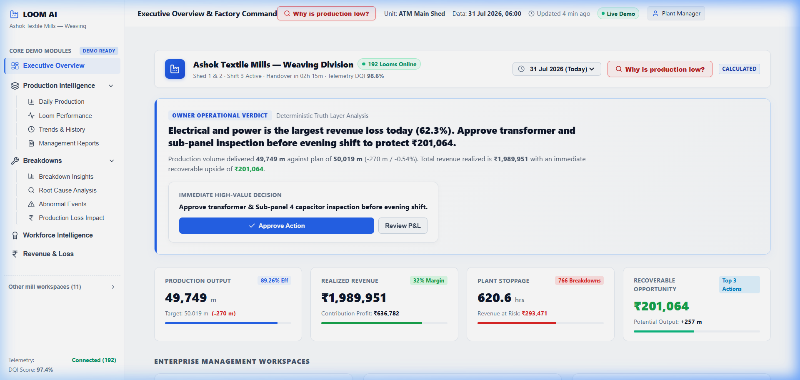

EXECUTIVE COMMAND CENTER

🔍 Click to zoom
👤 Managing Director & Mill Owner
ATM-MOD-01
01. Executive Overview
Single-screen executive pulse of Ashok Textile Mills (192 Looms across Shed 1 & Shed 2).
What is the Use & How to Navigate
The Executive Overview is the primary command center for plant owners and weaving directors. It consolidates plant telemetry into a single authoritative verdict, 4 core numbers, and an interactive 192-loom floor matrix.
Step-by-Step Operator Instructions
Key Controls & Click Targets
Executive Presentation Script & Hook
Value Proposition & Business Problem Solved
What to Point to on Screen During Demo
Visual Anchor Points
Live Demonstration Actions